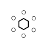

Symbologie
3Di kan allerlei veelal hydrologische objecten op de kaart visualiseren, zoals bijvoorbeeld gemalen en putten. Deze objecten zijn specifiek ontworpen en bedoeld om de eigenschappen van een rekenmodel te kunnen tonen.
Overzicht van symbolen
| Naam / Klasse | Zichtbaarheid | Status | Stroming | Onderscheid | Icoon |
|---|---|---|---|---|---|
| Manhole | bevat zoom_category | - | - | Opp of riolering | |
| 1D Boundary | toggle visibility | - | - | geen | ? |
| 1D Lateral | toggle visibility | - | - | geen | ? |
| Connection node | toggle visibility | - | - | - |  |
| Breslocatie | - | - | - | - |
Manhole
A small covered opening in a paved area allowing access beneath, especially one leading to a sewer.
Manhole
1D Boundary
Used to define the location of a flow-time boundary point within a 1D Simulation
1D Boundary
Icoon en gebruik hier
1D Lateral
Geometry: situated at or on the side.
1D Lateral
Icoon en gebruik hier
Connection node
A connection node is placed at a location where reaches can be attached to other reaches.
Connection node
Breach location
A gap in an embankment.